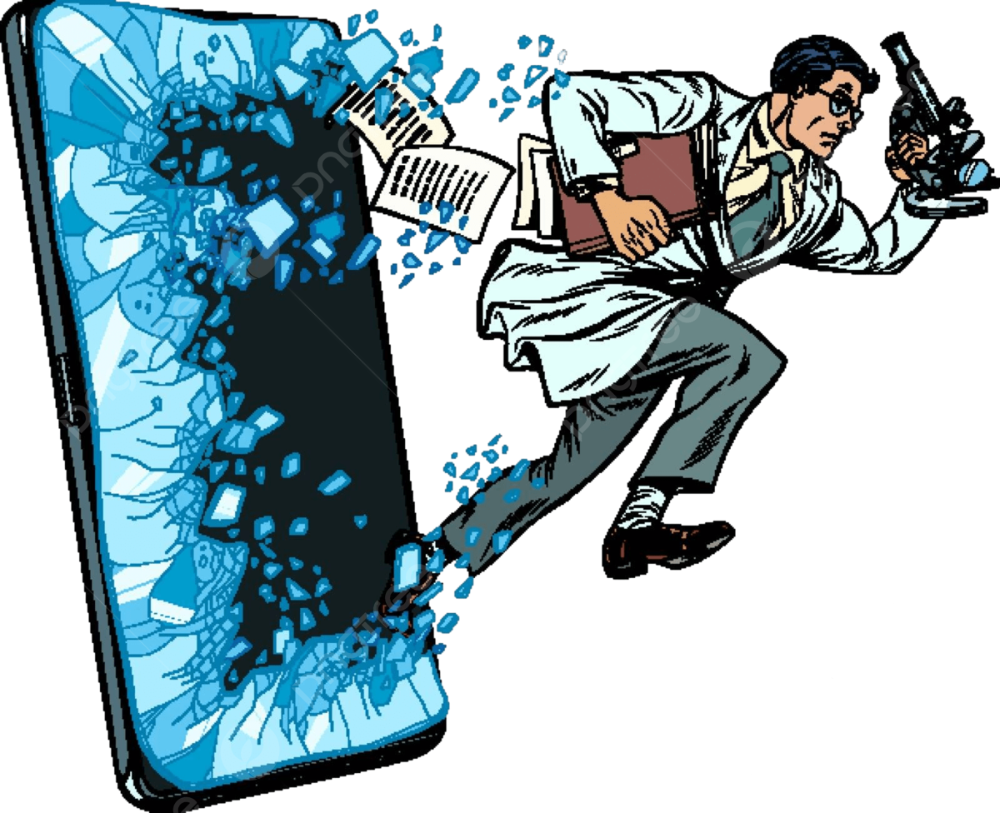

Water scarcity affects us all. Stay informed, take action, and help build a sustainable future.
DryWatch is an advanced drought prediction
platform harnessing the power
of cutting-edge technology to
forecast and mitigate the impact
of droughts before they strike.
Using AI-driven analytics,
satellite imagery, and real-time meteorological data,
DryWatch provides precise predictions to farmers, policymakers,
and environmental agencies.

Goals of DryWatch: A Smarter Future for Water Security
Accurate Drought Prediction – Utilize AI-powered analytics and climate models to provide early warnings of droughts, helping communities prepare in advance. Data-Driven Decision Making –
Enable governments, researchers, and farmers to access real-time insights for sustainable water management and agricultural planning.
Environmental Resilience – Strengthen global efforts to mitigate the effects of droughts by improving water conservation strategies and land restoration initiatives.